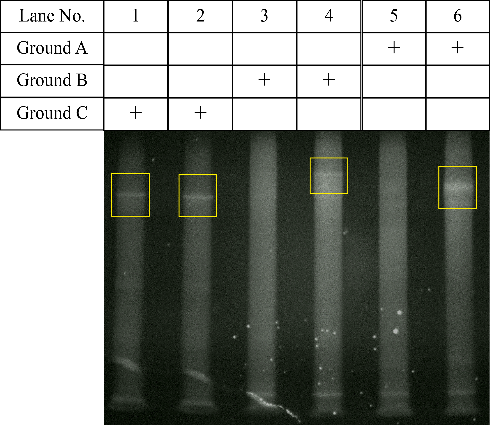

Generation of Ground
It is first necessary to confirm whether the DNA structure (Ground) that is the track on which the DNA Walker runs is properly made. Therefore, we verified the formation of Ground in Experiment D. First, we verified whether Ground A, B and C can be formed properly by electrophoresis experiment. In order to form Ground A and B, five types of single stranded DNA are required, and four types of single stranded DNA are required to form Ground C. Due to the large number of types of chains used, it is considered that concentration adjustment is important so as not to form huge structures due to undesired reactions. Therefore, in the electrophoresis experiment, dilution method was also examined using samples diluted before annealing and diluted after annealing. Samples diluted after annealing were used in lanes 1, 3 and 5, and samples diluted before annealing were used in lanes 2, 4 and 6. Comparing lanes 3, 4, and 5, 6, band appeared only in the lane using the sample diluted before annealing, so in experiment D, the sample should be diluted before annealing It was judged. Subsequently, we proceed to verify the formation of Ground. From the lanes 2, 4, and 6 in Figure 1, it can be seen that Ground A, B, C alone can be formed.
{kind=link}
Therefore, it was confirmed by electrophoresis experiment whether Ground A + Ground B, Ground B + Ground C, Ground (Ground A + Ground B + Ground C) could be formed. In this experiment, agarose gel electrophoresis was used considering the size of the structure to be formed.